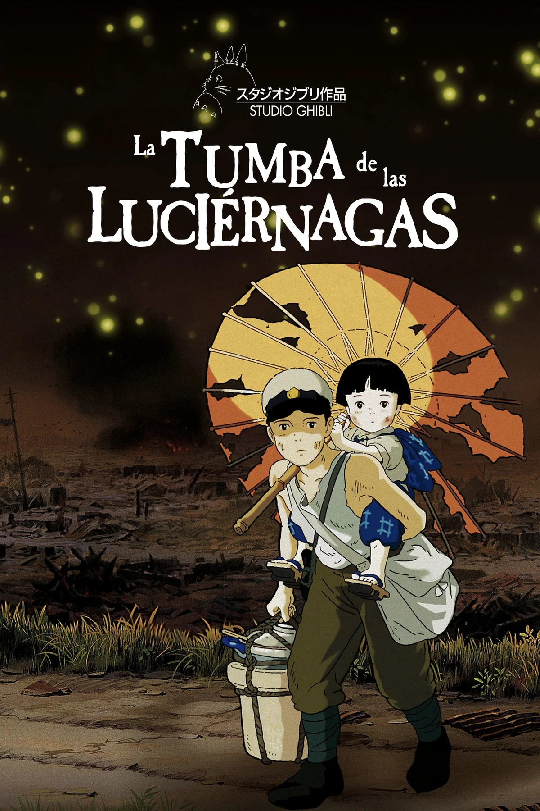

Uno de mis pasatiempos favoritos es ver películas, especialmente animes que me conmueven y me inspiran. Dos de mis favoritas son Your Name y La tumba de las luciérnagas.
Your Name
Esta película me impactó mucho porque combina romance, misterio y cultura japonesa. La historia de Mitsuha y Taki, que intercambian cuerpos y viven experiencias únicas, me enseñó la importancia de la conexión entre las personas y el destino. Cada vez que la veo, descubro detalles que antes no había notado y me hace reflexionar sobre cómo nuestras decisiones afectan la vida de otros.

La tumba de las luciérnagas
Esta película me conmueve profundamente y me recuerda la fragilidad de la vida. La historia de Seita y Setsuko muestra el sufrimiento y la esperanza durante tiempos difíciles. Me hace valorar más lo que tengo y me inspira a apreciar cada momento. La recomiendo a quienes quieren entender la resiliencia y la fuerza del espíritu humano.
Ambas películas me enseñan emociones intensas y reflexiones sobre la vida, el amor y la pérdida. Ver anime no es solo entretenimiento, sino una manera de conectar con historias profundas.